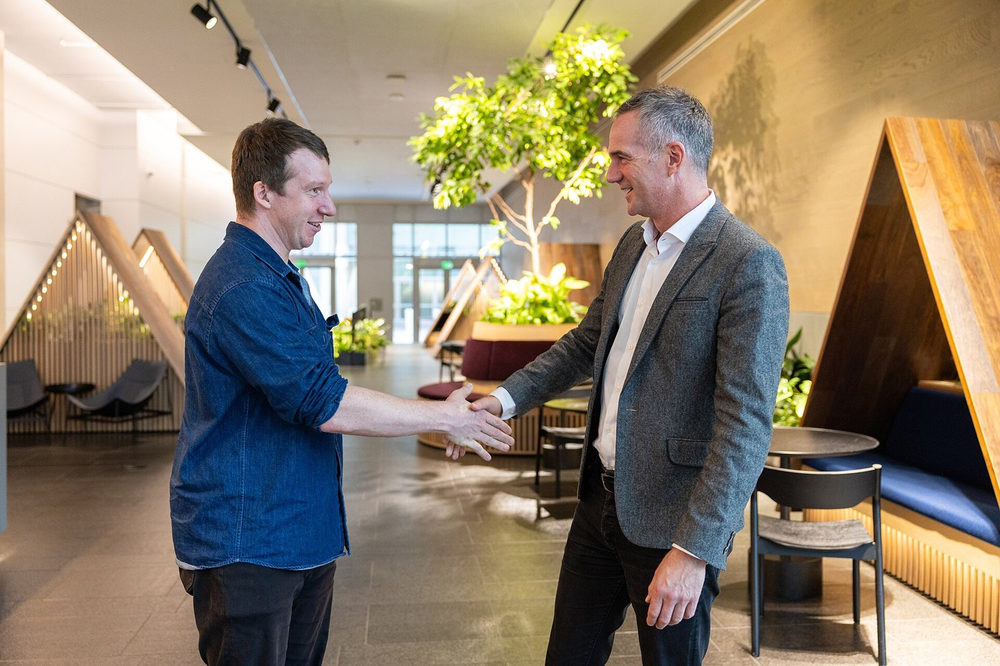

Anthropic debutta al Nasdaq: collocata a 83 dollari, chiude il primo giorno a 97,17
La società che sviluppa i modelli Claude è arrivata in Borsa con la raccolta più grande della storia. Il titolo ha aperto oltre il 30% sopra il prezzo di collocamento, poi ha restituito una parte del guadagno in una giornata pesante per tutta la tecnologia americana.

In sintesi
- Prezzo di collocamento 83 dollari, sopra la fascia 70-78; vendute 980 milioni di azioni invece di 825 milioni.
- Raccolti 81,3 miliardi di dollari: secondo CNBC è la quotazione più grande di sempre, sopra i 75 miliardi iniziali di SpaceX.
- Apertura a 111,50 dollari (+34%), massimo 115,10, chiusura a 97,17 (+17,07%).
- Valutazione di circa 1.500 miliardi al prezzo di collocamento; all'apertura ha superato per qualche ora i 2.000 miliardi.
- Giornata negativa per il resto del mercato: Nasdaq −2,25%, S&P 500 −2,02%, Nvidia −3,30%.
Giovedì 19 novembre Anthropic, la società che sviluppa i modelli di intelligenza artificiale Claude, ha debuttato al Nasdaq con il simbolo ANT. Mercoledì sera aveva fissato il prezzo di collocamento a 83 dollari per azione, sopra la fascia di 70-78 indicata la settimana scorsa, e aveva venduto 980 milioni di azioni invece degli 825 milioni previsti, raccogliendo 81,3 miliardi di dollari. Il primo scambio è avvenuto a 111,50 dollari; il titolo ha chiuso la seduta a 97,17 dollari, +17,07% sul prezzo di collocamento, mentre il Nasdaq perdeva il 2,25%.
Dal prezzo di collocamento al primo scambio
| Voce | Dato |
|---|---|
| Fascia di prezzo indicata il 10 novembre | 70-78 dollari |
| Prezzo di collocamento (18 novembre) | 83 dollari |
| Azioni vendute | 980 milioni (previste 825 milioni) |
| Raccolta | 81,3 miliardi di dollari |
| Valutazione al prezzo di collocamento | circa 1.500 miliardi, su base completamente diluita |
| Primo prezzo di scambio | 111,50 dollari (+34,3%) |
| Massimo e minimo della seduta | 115,10 e 92,72 dollari |
| Chiusura del primo giorno | 97,17 dollari (+17,07% sul collocamento, −12,85% sull'apertura) |
| Azioni scambiate | circa 847 milioni |
Il primo scambio è arrivato intorno alle 11:48 di New York, le 17:48 in Italia, più di due ore dopo l'apertura della Borsa: per le quotazioni molto attese gli intermediari raccolgono gli ordini e cercano il prezzo che fa incontrare domanda e offerta prima di far partire le contrattazioni. All'apertura, secondo CNBC, la società valeva circa 2.010 miliardi di dollari ed è diventata la decima azienda tecnologica americana sopra i mille miliardi. Nel resto della seduta il titolo ha oscillato fra 92,72 e 115,10 dollari e ha chiuso a 97,17: alla stessa base di calcolo usata per il collocamento, circa 1.760 miliardi.
💡 Impara: perché il primo prezzo è diverso da quello del collocamento
Il prezzo di collocamento è quello a cui le banche assegnano le azioni a chi le ha prenotate, soprattutto grandi investitori. Il primo giorno di Borsa, però, possono comprare tutti: se molti investitori rimasti senza azioni le vogliono comunque, il prezzo sale subito. È il cosiddetto IPO pop (balzo del debutto). Un forte rialzo del primo giorno è un buon segnale per chi ha ricevuto le azioni, ma significa anche che la società avrebbe potuto venderle più care: per questo le banche cercano un prezzo che lasci un guadagno iniziale, senza esagerare.
Il record: più grande di SpaceX?
| Quotazione | Anno | Raccolta iniziale | Con le azioni aggiuntive |
|---|---|---|---|
| Anthropic | 2026 | 81,3 miliardi $ | fino a circa 93,5 miliardi $ |
| SpaceX | 2026 | 75 miliardi $ | 85,7 miliardi $ |
| Saudi Aramco | 2019 | 25,6 miliardi $ | 29,4 miliardi $ |
| Alibaba | 2014 | 21,8 miliardi $ | 25 miliardi $ |
CNBC e TechCrunch parlano della quotazione più grande di sempre, e il primato dipende da come si conta. Con 81,3 miliardi l'offerta di Anthropic supera i 75 miliardi raccolti da SpaceX a giugno con le azioni previste inizialmente. SpaceX, però, ha poi venduto anche le azioni aggiuntive del greenshoe (opzione di sovrallocazione) e ha raccolto in tutto 85,7 miliardi. Le banche di Anthropic hanno a disposizione la stessa opzione, fino al 15% di azioni in più, cioè circa 147 milioni: se la eserciteranno per intero, la raccolta salirà a circa 93,5 miliardi e il confronto si chiuderà. Nella nostra analisi di lunedì, con la fascia di prezzo allora indicata, la raccolta sarebbe stata la seconda dopo SpaceX: l'aumento del prezzo e delle azioni ha cambiato la classifica.
Chi ha comprato
La domanda è stata superiore alle azioni disponibili. Secondo fonti citate da CNBC, circa metà degli investitori istituzionali che avevano fatto un ordine è rimasta senza azioni, e la società ha privilegiato quelli con cui aveva già rapporti. Ai piccoli investitori è andato circa il 15% dell'offerta, meno del 20% indicato inizialmente ma molto più del 5-10% di una quotazione tipica, attraverso piattaforme americane come Charles Schwab, Fidelity, Robinhood, SoFi ed E-Trade. CNBC riferisce che la domanda dei piccoli investitori è stata la più alta mai registrata.
Accanto all'offerta in Borsa c'è il collocamento privato da 26 miliardi di dollari, allo stesso prezzo di 83 dollari, ad alcune grandi aziende tecnologiche, fra cui AMD, Broadcom, Google, Micron, Microsoft, Nvidia e TSMC: azioni di classe N, senza diritto di voto. I sette cofondatori hanno venduto circa 3,38 milioni di azioni ciascuno, per circa 280 milioni di dollari a testa; secondo CNBC le banche incasseranno circa 550 milioni di commissioni.
Una giornata pesante per il resto del mercato
| Indice o titolo | Chiusura 19 nov | Variazione |
|---|---|---|
| Anthropic (ANT) | 97,17 $ | +17,07% sul collocamento |
| Nasdaq Composite | 23.879,20 | −2,25% |
| S&P 500 | 7.175,83 | −2,02% |
| Dow Jones | 49.097,06 | −2,19% |
| Nvidia | 145,98 $ | −3,30% |
| AMD | 489,19 $ | −7,72% |
| Salesforce | 183,31 $ | −3,72% |
| Microsoft | 498,30 $ | −1,97% |
Il debutto è avvenuto in una seduta negativa per tutta la tecnologia. Secondo CNBC, AMD ha perso circa l'8% dopo le accuse di un fondo specializzato in vendite allo scoperto, e Nvidia ha continuato a scendere dopo i conti di martedì, nonostante risultati sopra le attese. Il software, già colpito martedì, è sceso ancora, con Salesforce a −3,72%. È la tesi di chi sostiene che la quotazione stia «drenando liquidità»: per comprare le nuove azioni, alcuni gestori vendono quelle che hanno già.
💡 Impara: quando un titolo nuovo entra negli indici
Molti fondi e ETF comprano automaticamente tutte le società di un indice. Per questo l'ingresso in un indice importante porta acquisti certi. Secondo CNBC, Anthropic potrà entrare nel Nasdaq 100 dopo il 18 dicembre, grazie a una regola che accelera l'ingresso delle grandi società appena quotate, e in alcuni indici dell'intero mercato già dopo cinque giorni di scambi. Per l'S&P 500 servirà almeno un anno: fra le condizioni c'è anche quella di avere utili, e oggi la società è in perdita.
Cosa hanno detto
«Se lo facciamo bene, possiamo creare un'era di miracoli», aveva detto l'amministratore delegato Dario Amodei agli investitori durante le presentazioni dell'offerta, secondo CNBC. Sugli impegni di spesa per circa 900 miliardi di dollari in potenza di calcolo, che il prospetto indica fra i principali rischi, Amodei ha sostenuto che con la crescita dei ricavi appariranno meno grandi. Fra gli analisti, Ben Reitzes di Melius Research ha avviato la copertura con un giudizio buy (comprare) e un prezzo obiettivo di 155 dollari. Un prezzo obiettivo è la stima di un analista, non una previsione certa.
Cosa guardare ora
Le prossime tappe sono quattro. Nei prossimi giorni si saprà se le banche eserciteranno l'opzione sulle azioni aggiuntive. Dopo il 18 dicembre è atteso l'ingresso nel Nasdaq 100. Poi arriveranno i primi conti trimestrali da società quotata, che diranno se la crescita dei ricavi (33,2 miliardi nei primi nove mesi del 2026) continua al ritmo promesso. Infine, fra alcuni mesi, scadranno i vincoli che impediscono a dipendenti e investitori della prima ora di vendere: è spesso un momento di pressione sul prezzo. Per i rischi indicati nel prospetto, dalla governance agli impegni di spesa, rimandiamo alla nostra guida di lunedì. Questo articolo non è un consiglio di investimento.
Nota metodologica: prezzo di collocamento, numero di azioni, raccolta, valutazione al collocamento, commissioni, allocazione e dichiarazioni sono quelli riportati da CNBC e TechCrunch il 18 e il 19 novembre 2026; il primo prezzo di scambio è quello indicato da CNBC, CNN e Fox Business. Chiusura, massimo, minimo e volumi del titolo e le chiusure di indici e titoli sono di Yahoo Finance (dato delle 22:00); CBS News indica un massimo di 114,99 dollari. La valutazione alla chiusura è una stima di Alma Finanza ottenuta applicando la variazione del prezzo alla valutazione completamente diluita al collocamento. La raccolta con le azioni aggiuntive è un calcolo di Alma Finanza nel caso di esercizio integrale dell'opzione del 15%. I dati delle quotazioni di Saudi Aramco e Alibaba sono quelli comunicati all'epoca dalle società. Le regole per l'ingresso negli indici sono riportate da CNBC.